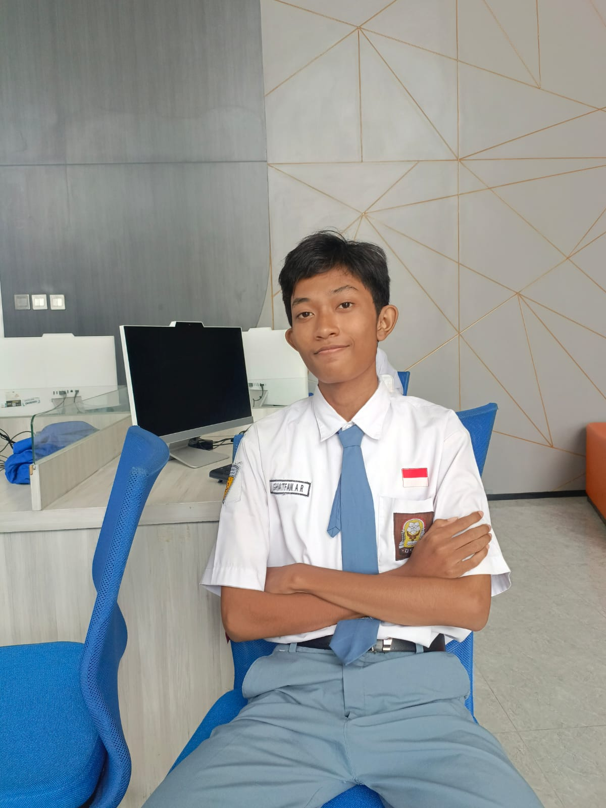

Saya berfokus pada penciptaan pengalaman digital yang menarik dan selalu berupaya memberikan solusi terbaik dalam setiap proyek yang saya kerjakan.

Saya merupakan siswa di SMK Krian 1 Sidoarjo jurusan Rekayasa Perangkat Lunak. Selama menempuh pendidikan, saya telah mempelajari berbagai mata pelajaran produktif seperti Pemrograman Web, Basis Data, Pemrograman Berorientasi Objek, serta UI/UX Design. Saya memiliki ketertarikan khusus di bidang backend development dan database management.
Saya sudah mengerjakan beberapa project tugas sekolah mulai dari sistem informasi perpustakaan, aplikasi e-commerce sederhana, hingga website portofolio. Selain itu, saya aktif mengikuti ekstrakurikuler IT Club dan pernah mengikuti lomba kompetensi di bidang software development.
Saya percaya bahwa kerja keras, rasa ingin tahu, dan kolaborasi adalah kunci untuk berkembang di dunia teknologi. Saya terbuka untuk kesempatan magang, proyek kolaborasi, atau sekadar bertukar pikiran tentang dunia programming.
Platform manajemen kursus online untuk SMK dengan sistem penilaian dan sertifikat digital.
Lihat ProyekDashboard interaktif untuk monitoring penjualan dan performa tim, dilengkapi grafik dinamis.
DemoAplikasi cuaca realtime dengan UI/UX minimalis, menampilkan suhu dan prediksi 5 hari.
Coba AplikasiPlatform e-commerce untuk UMKM lokal dengan fitur keranjang dan sistem pembayaran sederhana.
KunjungiChatbot cerdas berbasis NLP untuk layanan informasi kampus dan tanya jawab akademik.
Demo BotAplikasi pencarian film menggunakan TMDB API dengan filter genre dan rating.
JelajahiTertarik untuk berkolaborasi atau sekadar ngobrol? Yuk terhubung!
📧 ghatfanrizki626@gmail.com | 📍 Gresik, Indonesia